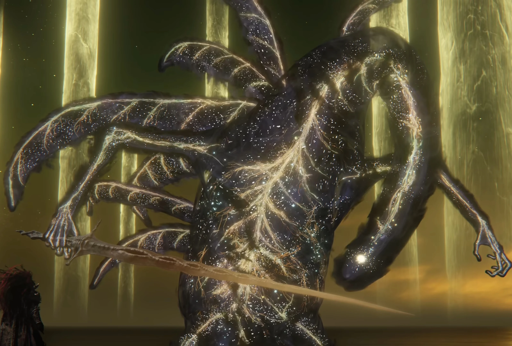

Devenez le seigneur d'Elden !
Devenez le seigneur d'Elden !
Dans un royaume dévasté par la guerre et les trahisons, vous êtes appelé, Sans-Éclat, à forger votre propre destin.
Bienvenue dans l'Entre-Terre, un monde où le pouvoir divin de l'Elden Ring a été fracturé, et où l’ordre ancien
s’est effondré. En tant qu’élu parmi les réprouvés, votre mission est de restaurer cette relique perdue et de
revendiquer le trône de Seigneur, ou sombrer dans l’oubli comme tant d'autres avant vous.
Ici, chaque créature, chaque ruine, chaque ombre dissimule des secrets oubliés et des horreurs indescriptibles.
Les dieux déchus et les êtres immortels qui gouvernaient jadis ce royaume n’abandonneront pas leur pouvoir sans lutte.
Vous, voyageur solitaire, devez faire face à des épreuves terrifiantes dans un monde où la beauté n’est qu’un masque pour
la terreur. Des montagnes recouvertes de cendres aux sombres marais empoisonnés, chaque pas vous rapproche un peu plus de
la vérité... ou de la mort.
Mais vous n’êtes pas totalement seul dans cette quête. Des alliés mystérieux, tout aussi brisés que vous, pourraient vous
prêter main forte dans les moments les plus sombres. Maîtrisez des armes légendaires, découvrez des sorts oubliés,
et invoquez des esprits anciens pour vous aider à triompher des ennemis qui se dresseront sur votre chemin. Pourtant, même
les outils les plus puissants ne garantissent pas la victoire. Chaque bataille est un test de votre courage, de votre intelligence,
et de votre capacité à apprivoiser la fureur du chaos.
Le chemin vers la rédemption ne sera pas simple. Chaque défaite vous rendra plus fort, chaque victoire vous rapprochera un peu plus
du pouvoir ultime. L’Entre-Terre n’attend qu’une chose : être dominée par celui qui saura rétablir l’Elden Ring. Mais attention,
Sans-Éclat, chaque choix que vous ferez influencera non seulement votre destin, mais celui du monde entier.
Êtes-vous prêt à relever ce défi ? Oserez-vous plonger dans le cœur des ténèbres pour restaurer la lumière ? L’Entre-Terre vous appelle,
héroïque vagabond. Entrez dans ce monde, et que la quête du pouvoir commence.
Bienvenue dans le monde d'Elden Ring, un royaume où le pouvoir de l'Elden Ring, autrefois source de stabilité, a été fracturé, plongeant l'Entre-Terre dans le chaos. En tant que Sans-Éclat, votre mission est de restaurer ce pouvoir et d'affronter les forces divines qui défendent leurs territoires. Cette quête vous mènera à travers des paysages variés, chacun regorgeant de mystères, de dangers et de puissants adversaires.
L'Entre-Terre est un vaste royaume composé de différentes régions, chacune ayant sa propre identité, ses dangers uniques et ses secrets enfouis. Voici quelques-unes des principales zones que vous traverserez :
| Image | Nom du Boss | Description | Localisation |
|---|---|---|---|
| Margit, le Déchu | Gardien des portes du Château de Stormveil, il mettra à l'épreuve votre détermination dès le début de votre quête. | Limgrave - Entrée du Château de Stormveil | |
| Godrick le Greffé | Le Seigneur de Stormveil, un tyran ayant greffé des parties du corps de ses victimes sur lui-même pour devenir plus puissant. | Limgrave - Château de Stormveil | |
 |
Rennala, Reine de la Pleine Lune | Souveraine de l'Académie de Raya Lucaria, une puissante sorcière manipulant la magie lunaire. | Liurnia des Lacs - Académie de Raya Lucaria |
 |
Radahn, Fléau des Étoiles | Un des plus grands demi-dieux, ayant arrêté le mouvement des étoiles. Sa puissance est presque incommensurable. | Cáelid - Cité Radahn |
| Rykard, Seigneur du Blasphème | Un demi-dieu ayant fusionné avec un serpent géant pour acquérir un pouvoir infernal. | Mont Gelmir - Volcan | |
| Malenia, Lame de Miquella | Guerrière légendaire et l'un des adversaires les plus redoutables de l'Entre-Terre, dotée d'une force surhumaine. | Plateau d'Altus - Haligtree | |
 |
Beast Clergyman / Maliketh | Un gardien mystérieux, au passé caché, manipulant la magie et la force brute. Il protège un secret fondamental sur l'Elden Ring. | Crumbling Farum Azula |
|  | Dragon Elden | La forme ultime de l'adversaire final, représentant le pouvoir absolu de l'Elden Ring. | Capitale - Leyndell |
Ces boss ne sont qu'une fraction des défis qui vous attendent. Préparez-vous à affronter des ennemis aussi puissants que variés, chacun possédant des techniques et des faiblesses uniques. Seuls les plus courageux atteindront le sommet et découvriront la vérité sur l'Elden Ring.